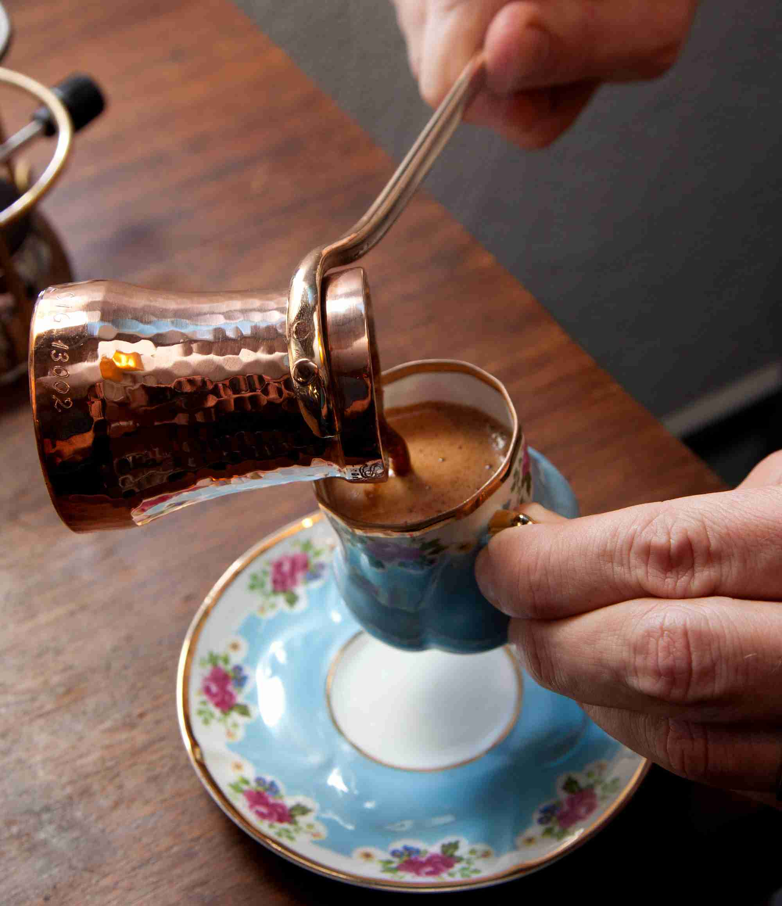

Turkish Coffee

A Refreshing Turkish Coffee
Indulge in a timeless ritual with Turkish coffee, where finely ground beans swirl in a copper pot, embracing centuries of tradition. Sip on the rich, unfiltered essence of history, as each velvety-smooth sip transports you to the heart of Istanbul's bustling bazaars.
Turkish coffee: a sensory journey that tantalizes taste buds and captures culture in every cup. Ground to a whisper, then simmered to perfection, it's not just a drink; it's a conversation starter, an art form, and a moment to savor the deep flavors of Turkey's past and present.
Ingredients
Coffee Beans: Turkish coffee requires very finely ground coffee beans, almost a powder-like consistency. Arabica beans are commonly used for their rich flavor.
Water: Fresh cold water is used to brew the coffee.
Sugar: Optionally, you can add sugar to taste while brewing. It's common to have different levels of sweetness, from unsweetened to very sweet.
Cardamom: Some variations of Turkish coffee include a pinch of ground cardamom, adding a unique and aromatic flavor.
Recipe Steps
- Mix: In the ibrik, combine a heaping teaspoon of finely ground coffee per cup. Add sugar and cardamom if desired.
- Water: Pour cold water into the ibrik for each cup. Stir to mix everything.
- Heat: Place the ibrik on low heat. Let it foam up, then remove just before boiling. Repeat this once more.
- Pour: Gently pour the coffee into cups, foam included. Allow grounds to settle briefly.
- Savor: Sip slowly and enjoy the rich flavors of your Turkish coffee, along with the cultural experience it embodies.